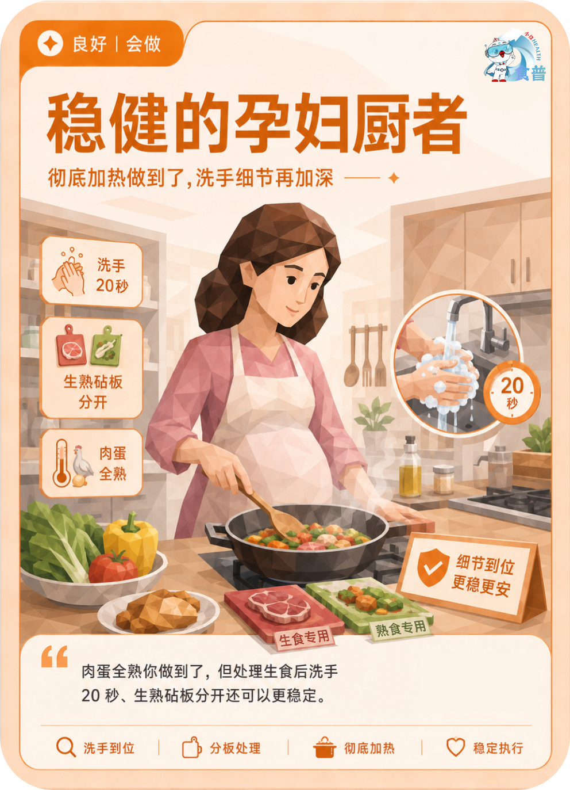

孕育人群
良好
会做
P08
稳健的孕妇厨者
彻底加热做到了,洗手细节再加深
肉蛋全熟你做到了,但处理生食后洗手 20 秒、生熟砧板分开还可以更稳定。
手机端可点击“打开原图”后长按图片保存；也可以直接长按上方图卡保存。

彻底加热做到了,洗手细节再加深
肉蛋全熟你做到了,但处理生食后洗手 20 秒、生熟砧板分开还可以更稳定。
手机端可点击“打开原图”后长按图片保存；也可以直接长按上方图卡保存。